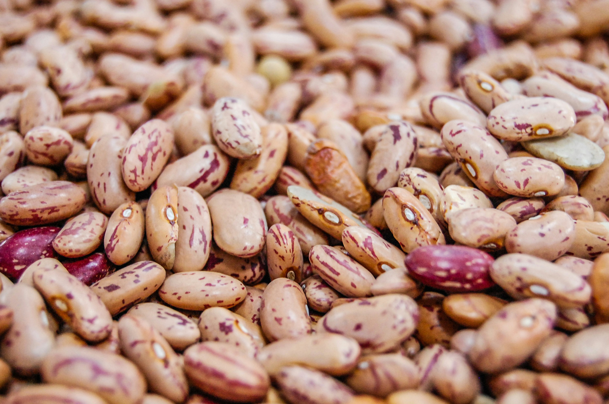

Description:
Perfectly cooked pinto beans are all about the timing.
Ingredients
- 1 pound dry pinto beans
- 6-8 cups of water
- Salt
Instructions
- Soak beans overnight/8 hours (no more than 12) in 8-10 cups of water, with a few tablespoons of salt is fine but not required
- Rinse dry beans
- Put beans in pot with at least 6 cups of water or more to add 1 inch of water over the top of the beans
- Add a heavy amount of salt
- Bring to a heavy boil for 10 mins
- After 10 mins reduce to a very light boil and cover for 1.5-2.5 hours